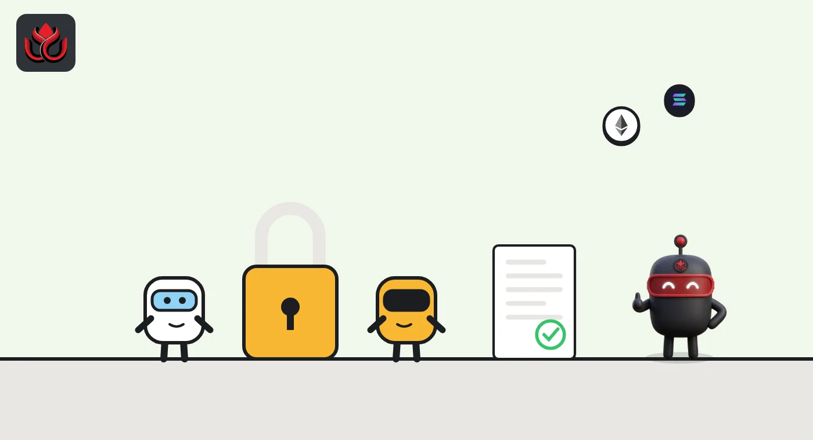
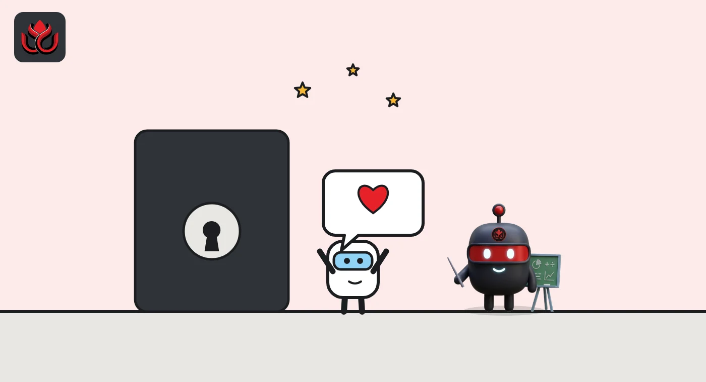

The SEC would let advisers hold client crypto keys, as 'Crypto Mom' Peirce bows out
A new SEC proposal would let investment advisers hold client crypto themselves when no custodian will, and let state trust companies act as custodians. The same day, the agency announced Commissioner Hester Peirce's departure.
Key points
- On October 1, 2026, the SEC proposed letting advisers and funds hold client crypto themselves when no qualified custodian supports an asset.
- Strict conditions apply: a written check at least every quarter, two people to approve any transaction, one address per client and yearly outside audits.
- State trust companies could also act as crypto custodians, and Commissioner Hester Peirce's departure was announced the same day.
What the SEC proposed
On October 1, 2026, the SEC proposed rules that would let investment advisers and regulated funds, such as mutual funds, hold crypto for clients, and in some cases keep the keys themselves. The same day, it announced that Commissioner Hester Peirce, who led its Crypto Task Force, is leaving.
The proposal would create a crypto-specific custody framework, allow some self-custody by advisers, and let state trust companies serve as custodians, the SEC said.
Chairman Paul Atkins said it would give advisers and funds "a compliant pathway where none existed before." In his statement he argued the current rules were written for traditional assets, and that custodians' ability to support new tokens can lag their launch by many months, according to the statement.
How adviser custody would work
Self-custody here means the adviser holding the client's private keys. It would only be a fallback. According to the SEC's fact sheet, the conditions include:
- A written finding, before self-custody starts and at least quarterly after that, that no permitted custodian is available for the asset.
- Documented expertise in safeguarding each asset, and systems for private key management that require at least two people to authorize any transaction. Those systems must be reviewed at least once a year.
- Each client's assets must sit at blockchain addresses that store only that client's crypto.
- Steps to reduce cyber risk, with cybersecurity controls reviewed at least yearly.
- An internal control report from an independent public accountant within six months of starting self-custody, then every year.
- Account statements to affected clients at least quarterly, and a written agreement to treat the crypto as a "financial asset" for extra protection under state law.
For regulated funds, the fund's board would have to review the adviser's report on why no qualified custodian is available, at the start and every quarter. It would also have to decide, before self-custody and yearly after that, that the asset would get reasonable care with the adviser.

Why advisers were stuck, and the trust company route
The SEC's custody rules require advisers to keep client assets with a "qualified custodian," usually a bank or broker. Commissioner Mark Uyeda wrote that the agency's February 2023 proposal left advisers with no workable path to hold crypto, and that a 2022 staff accounting bulletin, SAB 121, discouraged companies from safeguarding crypto at all, his statement said. He also pointed out that paper-era safeguards have limits, recalling that about 1.7 million paper certificates were destroyed or damaged at a custodian during Hurricane Sandy in 2012.
The new plan opens a second door through state trust companies. Under the fact sheet, an adviser or fund would need a reasonable basis, after due inquiry, to believe the trust company is authorized by its state banking regulator to hold crypto. The company must have written policies to protect crypto and related cash from theft, loss and misuse. The adviser must review its latest audited financial statements and internal control report, and client crypto must be kept apart from the company's own assets. For regulated funds, these conditions sit in a proposed new Rule 17f-8.
The proposing release also covers edge cases. Receiving airdropped tokens would not break the custody rules if the adviser or fund meets set conditions. Records kept on a blockchain could satisfy existing recordkeeping rules, as long as they can be given to the SEC promptly in a readable format.
Other custody changes
The proposal also updates general custody rules. According to the fact sheet, it extends deadlines for delivering audited financial statements for funds of funds and changes the timing for pooled vehicles formed late in their fiscal year. Audited statements would have to follow US accounting standards, with an exception for foreign pooled vehicles. It updates rules on broker-dealer custody for regulated funds and removes barriers to crypto-related investment advice and a wider range of crypto strategies for funds.
The release numbers are IA-7023 and IC-36353. Comments are due 60 days after publication in the Federal Register.

What the commissioners said
Commissioner Hester Peirce titled her statement "Roller Coaster Ride." She welcomed the wider set of custody options and the role for state trust companies, and criticized the SEC's 2023 proposal, which she said made compliant crypto custody look nearly impossible. She objected to calling adviser custody "self-custody," because true self-custody means investors holding their own keys. She joked that she would have preferred "shelf-custody". She hopes "the regulatory roller coaster will soon end in workable custody rules."
Uyeda backed the plan and wrote that rules "unworkable in practice will not protect investors," and only offer the illusion of protection.
Peirce's departure
Also on October 1, Atkins and Uyeda issued a statement on Peirce's departure. She served on the SEC staff from 2000 to 2008 and as a commissioner from 2018. They credited her with leading the Crypto Task Force and challenging what critics called regulation by enforcement, often standing alone on the Commission. They wrote that her "dedication, intellect, and humor will be sorely missed." The statement did not give her exact last day.
LC Insight analysis
This section is our reading of the facts above, not a statement of fact.
- We think this is a practical fix, not a crypto victory lap. Advisers get a way to hold new tokens before big custodians support them, but the audits and quarterly paperwork will keep most small advisers with outside custodians.
- State trust companies are the quiet winners. Several crypto custody firms already hold state trust charters, and federal recognition could bring them advisers and funds as clients.
- Losing Peirce removes the commissioner who did most to shape crypto policy from the inside. We expect Atkins' office and SEC staff to carry the crypto agenda from here.
What's next
- Federal Register publication and the 60-day comment deadline
- Who is nominated to fill Peirce's seat
- Comments from state trust companies and large custodians
Disclaimer. This article is based on public information and the sources listed below as of the update time shown. It is for information only and is not investment, legal or tax advice. Figures may change as companies and authorities publish new data.
Sources
- SEC, Press release 2026-100 (October 1, 2026)
- SEC, Chairman Atkins statement on crypto custody (October 1, 2026)
- SEC, Commissioner Peirce, Roller Coaster Ride (October 1, 2026)
- SEC, Commissioner Uyeda statement (October 1, 2026)
- SEC, Statement on departure of Commissioner Peirce (October 1, 2026)
- SEC, Fact sheet: Custody of crypto assets (IA-7023)
- SEC, Proposing release IA-7023; IC-36353 (October 1, 2026)